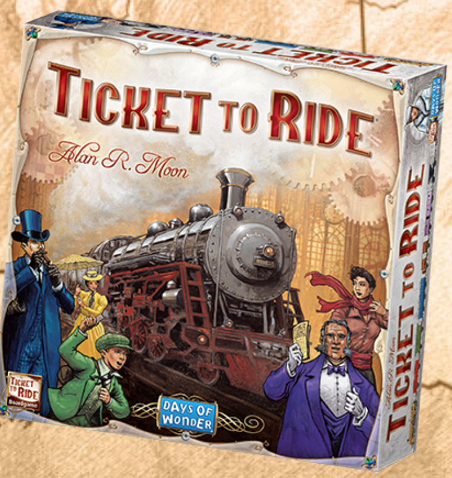
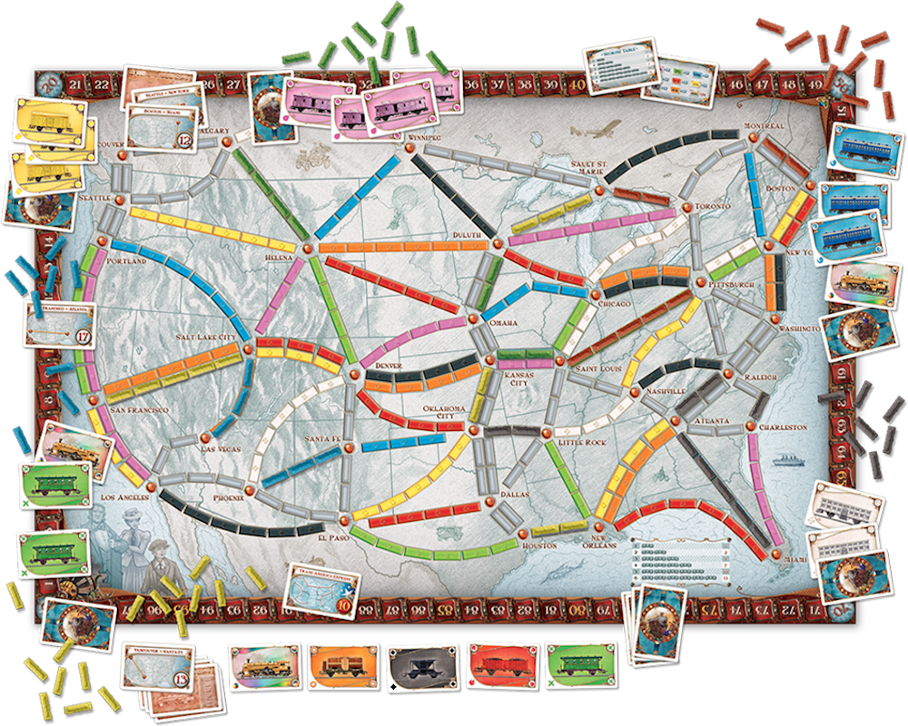

The Game: Trains

The chosen game is inspired by Ticket to Ride. Playing the actual game may help develop some intuition but the physical game and the implementation will significantly differ in details.
Most of the time when we discuss ideas, the words “referee”, “player”, and so on refer to software components not people. Speaking of things they own/receive/trade means "its" is most appropriate—
to remind you of their inanimate nature.
Overview The Trains game is about acquiring train lines and getting from one place to another. The central game piece is a map of places and direct train connections between places. Each connection has one of these Colors: "red", "blue", "green", "white"; its Length is one of 3, 4, 5}. Two cities can be connected by one color at most once.
The referee hands players colored cards and rails, which they keep hidden from each other. With a matching number of colored cards, a player can acquire a connection between two places. With a matching number of rails, a player occupies the segments of an acquired connection. Once one player has acquired and occupied a connection, other players cannot use it.
In addition to cards and rails, the referee also allows each player to pick a couple of travel destinations. Each such destination is a pair of places on the game map, not necessarily with a direct connection but guaranteed to be connected via a path. The player’s task is to create a route between the two places of a destination. Like in Massachusetts, a route consists of a number of connections. Like their cards, players hide their chosen destinations from each other.
The player with the most points wins. Acquiring connections and reaching destinations contribute to a player’s point total. Each rail segment is worth one point. Each destination is worth some number of points. If a player manages to connect the specified places via the acquisition of connections, the points are added to the player’s total; otherwise they are subtracted. Lastly, the player with the longest continuous path of rail connections receives extra points.
Pieces There are a total of 200 250 colored cards, 45 rails per player, and one game map. Here is the game map of the physical game:

A player implementation receives a map from its context. Here is an illustrative map from the staff implementation:

the total number of participants;
a map for the game, that is, the map of places and connections;
four randomly chosen colored cards; and
the same specified number of rails.
Playing a Turn
request additional cards:
If the referee still has colored cards, the referee hands the player two randomly chosen cards.
If the referee no longer has any colored cards, it ignores the request of the player.
acquire a connection:
To acquire a connection, the player hands the referee the required number of matching cards and the same number of rails.
Ending a Game When one of the player’s number of rails drops to 2, 1, or 0 at the end of a turn, each of the all other remaining players get to take one more turn.
The game also ends if every remaining player has had an opportunity to play a turn and the state of the game does not change.
Scoring Each player receives one point per acquired segment, Several players may hold a longest route path. and 20 points for holding the longest continuous route simple, acyclic path by points, which equals a segment.
If a player manages to connect the places specified via a destination, the referee adds 10 points to the player’s total at the end of the game; otherwise the referee subtracts 10 points.
Ranking The players are ranked according to their points.
Warning Like with all software projects, the details of the game may change as experimentation with the prototypes suggests improvements.